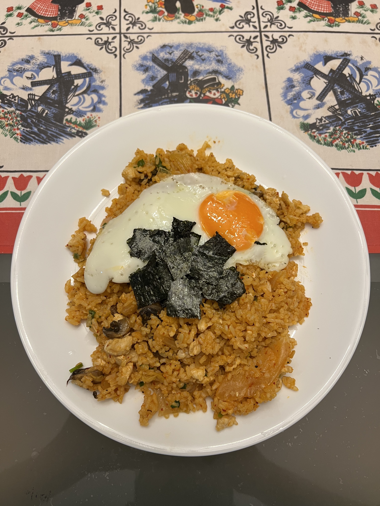

Kimchi Fried Rice

Description
The second best fried rice after good old egg fried rice!
Ingredients (1 serving):
- 1/2 cup of uncooked rice
- 2 teaspoons toasted sesame oil
- 1/2 cup kimchi (at least 2 weeks old)
- 1/4 cup kimchi juice
- 2 shiitake mushrooms
- 1 chicken fillet
- 2 teaspoons gochujang
- 1 teaspoon soy sauce
- 1 tablespoon vegetable oil
- 1 pinch salt
- 1 pinch pepper
- 1 pinch MSG
- 1 egg
- 1 scallion
- 2 seaweed
Steps:
- Cook the rice 1 day before and keep refrigerated until cooking.
- Add the sesame oil to the rice and mix it in (break up the rice and ensure they do not clump up).
- Squeeze the kimchi juice out from the kimchi and place it in a separate bowl.
- Cut the kimchi, mushrooms and chicken fillet into small pieces.
- Mix the kimchi juice, gochujang and soy sauce to make kimchi sauce.
- Heat the vegetable oil in a frying pan at medium high heat.
- Add the kimchi and mushrooms to the frying pan and stirfry well.
- Add the chicken fillet to the frying pan once the kimchi and mushrooms start to caramelise and stirfry until chicken fillet is cooked.
- Add the rice to the frying pan and toss the rice (shake, forward thrust and upward wrist flick) until it is heated throughly.
- Add the kimchi sauce to the frying pan and continue to toss the rice at high heat until all the liquid has evaporated and the ingredients are mixed well.
- Season the rice with salt, pepper and MSG and mix well.
- Cook the sunny side up egg and place on top of the fried rice.
- Cut the scallion and seaweed into small pieces to garnish the fried rice before serving.